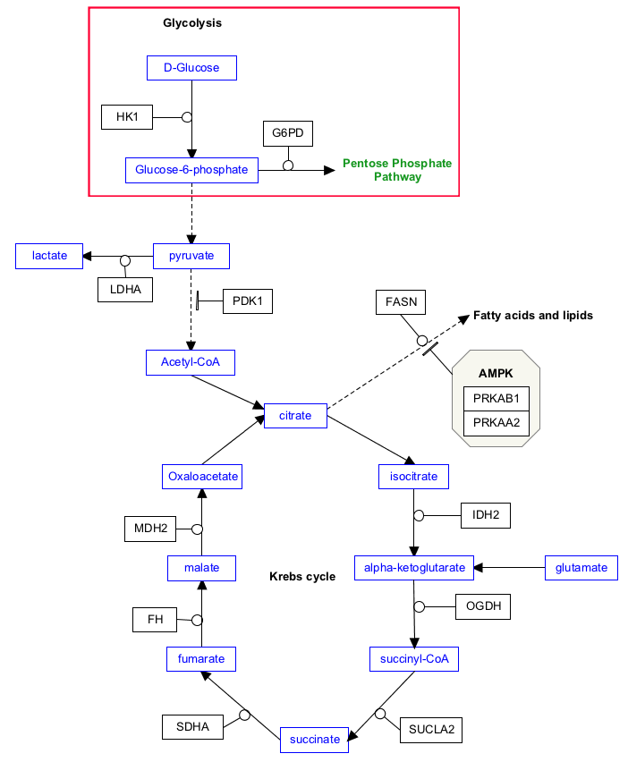

Background
In this task, you will complete the first two reactions in the published figure. These include the conversion from glucose to glucose-6-phosphate, and the input from glucose-6-phosphate to the pentose phosphate pathway.
Your Mission
Draw the conversion reactions highlighted in the below figure.
- To complete this challenge, click the "Launch Editor" button below. You will receive your challenge as a file named "WikiPathwaysAcademy-Challenge.jnlp". Open it to see your control panel.
-
Perform the challenge tasks...
- Add metabolite nodes for glucose and glucose-6-phophate
- To add the pathway node, select Metabolite (“PATH”) from the Data Node palette in the Objects tab
- Click on the canvas to place the metabolite node
- Double-click on node to open its properties
- Instead of searching for an ID, enter the id “WP134” in the Identifier field, and enter “WikiPathways” in the Database field.
- Type in “Pentose Phosphate Pathway” as the Text label. Click OK
- Draw the conversion arrows between the nodes, and add anchors to each
- Add the gene products that catalyze the conversions, HK1 and G6PD
- Add the two catalysis arrows for HK1 and G6PD
- To add the glycolysis label, select Label from the Basic Shapes palette in the Objects tab
- Double-click the label to open its properties
- Type in “Glycolysis“ and click OK
- With the label still selected, in the Properties tab, check the Bold checkbox to make the label bold
- Done!
- When you have completed the challenge, save your work as a GPML file under File > Save As.
- Drag-n-drop the GPML file below to submit.


Click to download solution file (For Testing Only)